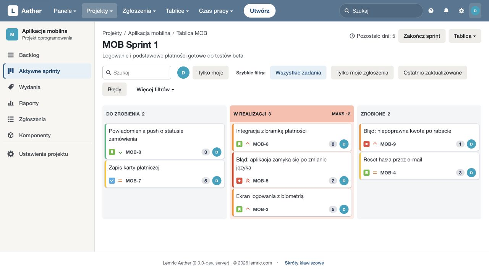
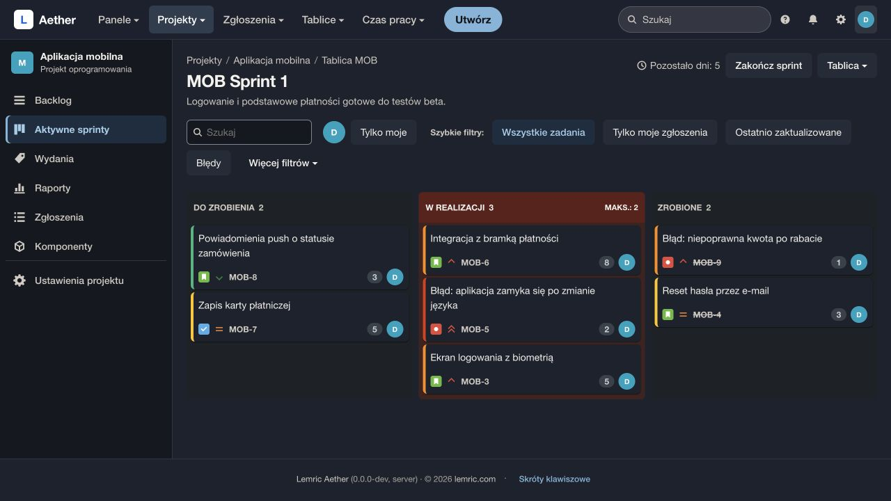
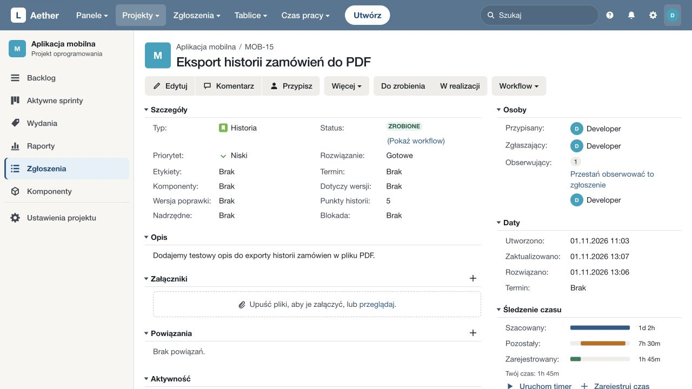
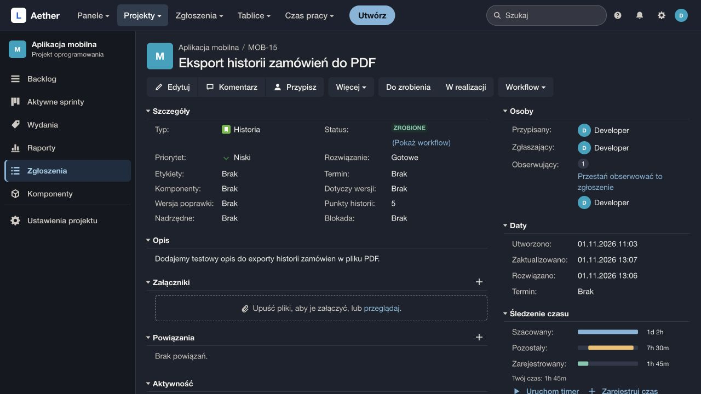

Aether LEMRIC · ZARZĄDZANIE PROJEKTAMI
Zarządzanie projektami na Twoich serwerach.
Prowadź projekty od pierwszego zgłoszenia do wydania. Korzystaj z tablic, planuj sprinty i rejestruj czas pracy. Aether Lemric działa na infrastrukturze, którą zarządza Twoja organizacja.
Dla zespołów produktowych, projektowych i IT.
AetherProjekty Zgłoszenia TabliceSzukaj zgłoszeń…AK
Sklep internetowy SKL
Sprint 4 · Obsługa zamówień
Do zrobienia 2
Powiadomienie o wysyłce
W realizacji 2
Podsumowanie zamówienia
Zapamiętanie adresu dostawy
Zrobione 2
Historia zamówień
ZrobionePotwierdzenie płatności
ZrobioneZgłoszenia i projektyTablice i sprintyKonfigurowalny workflowEwidencja czasuRole i uprawnieniaWłasna instalacja
OD ZGŁOSZENIA DO WYDANIA
Zadania, ustalenia i czas pracy w jednym projekcie.
Zgłoszenie przechowuje opis zadania, jego priorytet, osobę odpowiedzialną i historię zmian. Tablice, backlog i raporty pokazują te same zadania podczas planowania i przeglądu pracy.
Ustal kolejność i zakres pracy
Z backlogu wybierasz zadania do sprintu, określasz jego cel i szacujesz nakład pracy. Zgłoszenia możesz też przypisać do wersji, aby przygotować zakres wydania.
- Backlog i kolejność zgłoszeń
- Cel sprintu i szacowanie zadań
- Komponenty i wersje produktu
Śledź realizację zadań
Tablica pokazuje, które zgłoszenia czekają, są w realizacji lub zostały zakończone. Stany i dozwolone przejścia ustalasz w workflow projektu.
- Tablice z filtrami i torami
- Własne stany i przejścia
- Komentarze, załączniki i historia
Podsumuj postęp i czas pracy
Sprawdź ukończone zgłoszenia, przebieg sprintu i zarejestrowany czas. Wpisy czasu możesz zebrać w zestawienie, wysłać do zatwierdzenia i wyeksportować.
- Raporty projektu i sprintów
- Timer i ręczne wpisy czasu
- Zatwierdzenia i historia korekt
Aether W CODZIENNEJ PRACY
Zobacz, jak pracuje się w Aether.
Zobacz, jak zgłoszenia łączą się z planem sprintu, workflow i wpisami czasu. Ilustracje pokazują jeden przykładowy projekt sklepu internetowego.
AetherProjekty Zgłoszenia TabliceSzukaj zgłoszeń…AK
Sklep internetowy SKL
Sprint 4 · Obsługa zamówień
Do zrobienia 2
Wybór punktu odbioru
Powiadomienie o wysyłce
W realizacji 2
Podsumowanie zamówienia
Zapamiętanie adresu dostawy
Zrobione 2
Historia zamówień
ZrobionePotwierdzenie płatności
ZrobioneZadania według etapu realizacji
Zobacz zadania w kolumnach, osoby odpowiedzialne i priorytety.
AetherProjekty Zgłoszenia TabliceSzukaj zgłoszeń…AK
Sklep internetowy SKL
Zgłoszenie
SKL-21 W realizacji
Podsumowanie zamówienia
Opis
Klient widzi podsumowanie produktów, adres dostawy i wybraną metodę płatności przed złożeniem zamówienia.
- Wyświetlenie produktów i kosztu dostawy
- Możliwość powrotu do edycji adresu
- Potwierdzenie zamówienia
Aktywność
- Osoba odpowiedzialna
- JP
- Wysoki
- Wysoki
- Etykiety
- zamówienia
- Wydania
- Wersja 1.4
Opis, ustalenia i powiązania zadania
Opis, rozmowa, powiązania i historia pozostają przy zadaniu.
AetherProjekty Zgłoszenia TabliceSzukaj zgłoszeń…AK
Sklep internetowy SKL
Sprint 4 · Obsługa zamówień
✓SKL-24Wybór punktu odbioru3AK
✓SKL-25Powiadomienie o wysyłce2MK
✓SKL-21Podsumowanie zamówienia5JP
✓SKL-22Zapamiętanie adresu dostawy3AK
✓SKL-18Historia zamówień2MK
✓SKL-19Potwierdzenie płatności1JP
Wersja 1.42 z 6 zgłoszeń gotowe
Zadania i szacunki w sprincie
Ułóż kolejność pracy i wybierz zakres iteracji.
AetherProjekty Zgłoszenia TabliceSzukaj zgłoszeń…AK
Sklep internetowy SKL
Workflow
1Do zrobienia
2W realizacji
3Do akceptacji
4Zrobione
Przy zamknięciu wymagane jest pole Rozwiązanie.
Wersjonowanie definicji workflow
Stany i warunki zmiany statusu
Określ przejścia i wymagania dopasowane do procesu zespołu.
AetherProjekty Zgłoszenia TabliceSzukaj zgłoszeń…AK
Sklep internetowy SKL
Czas pracy
| Zgłoszenie | Czas |
|---|---|
| SKL-21 Podsumowanie zamówienia | 2 h |
| SKL-22 Zapamiętanie adresu dostawy | 1 h 30 min |
| SKL-18 Historia zamówień | 30 min |
| Łącznie | 4 h |
Wpisy czasu powiązane z zadaniami
Rejestruj czas przy zgłoszeniach i wysyłaj zestawienia do zatwierdzenia.
AetherProjekty Zgłoszenia TabliceSzukaj zgłoszeń…AK
Sklep internetowy SKL
Uprawnienia
Przykładowy schemat uprawnień
| Działanie | Przeglądający | Członek | Administrator |
|---|---|---|---|
| Odczyt projektu | ✓ | ✓ | ✓ |
| Edycja zgłoszeń | — | ✓ | ✓ |
| Konfiguracja projektu | — | — | ✓ |
Uprawnienia określa schemat przypisany do projektu.
Prawa do przeglądania i zmiany projektu
Ustal, kto może czytać zgłoszenia, pracować nad nimi i zarządzać projektem.
Ilustracja funkcji na przykładowych danych
ZOBACZ APLIKACJĘ
Tablica i szczegóły zgłoszenia w działającej aplikacji
Przyjrzyj się tablicy aktywnego sprintu i szczegółom zgłoszenia. Otwórz ekran, aby zobaczyć go w pełnym rozmiarze.




Projekt demonstracyjny w działającej aplikacji, przed zmianą nazwy na Aether Lemric. Interfejs w języku polskim.
Czas pracy
Rejestruj czas pracy przy zadaniach.
Przy zgłoszeniu możesz uruchomić timer lub wpisać przepracowany czas. Wpisy trafiają do zestawień, które wysyłasz do zatwierdzenia. Późniejsze korekty zachowują historię zmian.
- Timer i ręczne wpisy
- Zestawienia czasu i eksport CSV
- Wysyłanie zestawień do zatwierdzenia
- Korekty z zachowaniem historii
AetherProjekty Zgłoszenia TabliceSzukaj zgłoszeń…AK
Sklep internetowy SKL
Czas pracy
| Zgłoszenie | Czas |
|---|---|
| SKL-21 Podsumowanie zamówienia | 2 h |
| SKL-22 Zapamiętanie adresu dostawy | 1 h 30 min |
| SKL-18 Historia zamówień | 30 min |
| Łącznie | 4 h |
Ilustracja funkcji na przykładowych danych
Uprawnienia
Określ, kto widzi projekt i co może zmieniać.
Przydziel dostęp osobom lub grupom. Oddziel prawo do przeglądania projektu od tworzenia, edycji, przypisywania i usuwania zgłoszeń. Osobno ustal dostęp do wpisów czasu oraz administracji projektem.
- Dostęp dla osób i grup
- Role: przeglądający, członek, administrator
- Osobne prawa do działań na zgłoszeniach
- Kontrola dostępu do wpisów czasu
- Logowanie SSO (OIDC) i MFA
AetherProjekty Zgłoszenia TabliceSzukaj zgłoszeń…AK
Sklep internetowy SKL
Uprawnienia
Przykładowy schemat uprawnień
| Działanie | Przeglądający | Członek | Administrator |
|---|---|---|---|
| Odczyt projektu | ✓ | ✓ | ✓ |
| Edycja zgłoszeń | — | ✓ | ✓ |
| Konfiguracja projektu | — | — | ✓ |
Uprawnienia określa schemat przypisany do projektu.
Ilustracja funkcji na przykładowych danych
Aether SERVER
Zainstaluj Aether na własnych serwerach.
Aether Server uruchamiasz w środowisku zarządzanym przez Twoją organizację. Wybierasz miejsce przechowywania danych, sposób udostępnienia aplikacji i terminy aktualizacji.
- Baza i załączniki w Twoim środowisku
- Dostęp zgodny z zasadami organizacji
- Aktualizacje i kopie pod kontrolą administratora
Twój zespół
Aether Server
Baza danych i załączniki
DLA TWOJEGO ZESPOŁU
Aether dla zespołów produktowych, projektowych i IT
Zespoły produktowe
Prowadź zgłoszenia błędów i propozycje nowych funkcji w jednym projekcie. Planuj sprinty i sprawdzaj, co trafi do kolejnego wydania.
Zespoły projektowe
Uporządkuj zadania, odpowiedzialność i czas pracy w projektach. Zachowaj ustalenia razem z pracą, której dotyczą.
Wewnętrzne zespoły IT
Prowadź zadania i zmiany w oddzielnych projektach. Przydziel dostęp osobom i grupom zgodnie z ich rolą.
ZMIANA NARZĘDZIA
Przenieś dotychczasowe zgłoszenia do Aether.
Dane z Jira wczytasz z pliku eksportu. Przed importem dopasuj pola i sprawdź wynik próby. REST API pozwala przygotować połączenia z innymi narzędziami zespołu.
Dowiedz się więcej- 1
Przygotuj eksport
Wybierz dane z Jira lub przygotuj paczkę w formacie Aether.
- 2
Dopasuj pola
Sprawdź, jak dane trafią do projektu, i wykonaj próbny import.
- 3
Zaimportuj zgłoszenia
Uruchom import i sprawdź raport jego wyników.
Zanim wybierzesz Aether
Dla kogo jest Aether Lemric?
Dla zespołów, które zarządzają projektami przez zgłoszenia, pracują na tablicach lub w sprintach i chcą połączyć planowanie z historią pracy oraz ewidencją czasu. Edycja Server odpowiada na potrzebę instalacji we własnym środowisku.
Czy mogę zainstalować Aether na własnych serwerach?
Tak. Aether Server jest przeznaczony do samodzielnej instalacji. Twoja organizacja zarządza infrastrukturą, bazą danych, załącznikami, aktualizacjami i kopiami zapasowymi.
Czy musimy pracować w sprintach?
Nie. Możesz prowadzić pracę na tablicy Kanban i w backlogu bez aktywnego sprintu. Sprinty są dostępne, gdy zespół planuje pracę w iteracjach.
Czy projekty mogą mieć różne zasady dostępu i workflow?
Tak. Konfigurujesz proces i dostęp do projektu. Schematy uprawnień określają, kto może przeglądać projekt i wykonywać poszczególne działania.
Jak przenieść zgłoszenia z Jira?
Zgłoszenia z Jira przeniesiesz z pliku eksportu. Dopasuj pola do projektu i wykonaj próbę, zanim uruchomisz właściwy import. Osobno sprawdź konfigurację i dodatki używane w Jira, bo nie są przenoszone automatycznie.
Jak uzyskać informacje o licencji i rozpoczęciu wdrożenia?
Napisz na support@lemric.com. Podaj wielkość zespołu, sposób pracy i planowane środowisko instalacji, aby omówić dostępność wydania, licencję i zakres wdrożenia.
POROZMAWIAJMY O TWOIM ZESPOLE
Aether Server dla Twojego zespołu
Napisz, jak pracujecie, ile osób liczy zespół i gdzie chcesz uruchomić Aether. Zapytaj o wydanie Server, licencję i pierwsze kroki.
Ustalmy kolejność informacji na ekranie przed przeglądem.